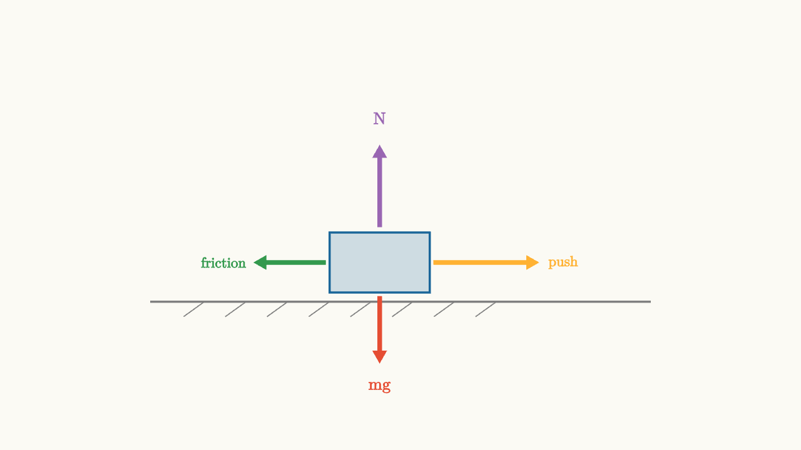

Friction Is A Model Of Contact
Push a heavy box gently and it stays still. Push harder and it still stays still. Push hard enough and suddenly it slides. The contact with the floor has been changing its response the whole time.
Friction is the model we use for that contact. At the microscopic level, surfaces are rough, materials deform, tiny junctions form and break, and heat is produced. The standard school model compresses all of that into a few rules that work surprisingly well for many everyday problems.
The normal force $N$ measures how hard the surfaces press together. The friction force acts along the surfaces. Static friction applies when the surfaces are not slipping relative to each other. It adjusts up to a maximum:
Kinetic friction applies once slipping occurs:
Usually $\mu_k<\mu_s$, which is why it can be harder to start a heavy object moving than to keep it moving.

source
background = [0.985, 0.98, 0.955, 1]
camera = Camera(4.8b)
mesh diagram = block {
. stroke{GRAY, 2} Line(start: [-3, -0.92, 0], end: [3, -0.92, 0])
. stroke{GRAY, 1} Line(start: [-2.6, -1.1, 0], end: [-2.35, -0.92, 0])
. stroke{GRAY, 1} Line(start: [-2.1, -1.1, 0], end: [-1.85, -0.92, 0])
. stroke{GRAY, 1} Line(start: [-1.6, -1.1, 0], end: [-1.35, -0.92, 0])
. stroke{GRAY, 1} Line(start: [-1.1, -1.1, 0], end: [-0.85, -0.92, 0])
. stroke{GRAY, 1} Line(start: [-0.6, -1.1, 0], end: [-0.35, -0.92, 0])
. stroke{GRAY, 1} Line(start: [-0.1, -1.1, 0], end: [0.15, -0.92, 0])
. stroke{GRAY, 1} Line(start: [0.4, -1.1, 0], end: [0.65, -0.92, 0])
. stroke{GRAY, 1} Line(start: [0.9, -1.1, 0], end: [1.15, -0.92, 0])
. fill{alpha{0.2} BLUE} stroke{BLUE, 2} center{[-0.25, -0.45, 0]} Rect([1.2, 0.72])
. color{ORANGE} Arrow(start: [0.4, -0.45, 0], end: [1.65, -0.45, 0])
. color{GREEN} Arrow(start: [-0.9, -0.45, 0], end: [-1.75, -0.45, 0])
. color{PURPLE} Arrow(start: [-0.25, -0.02, 0], end: [-0.25, 0.95, 0])
. color{RED} Arrow(start: [-0.25, -0.86, 0], end: [-0.25, -1.65, 0])
. center{[1.95, -0.45, 0]} color{ORANGE} Text("push", 0.62)
. center{[-2.12, -0.45, 0]} color{GREEN} Text("friction", 0.62)
. center{[-0.25, 1.28, 0]} color{PURPLE} Text("N", 0.72)
. center{[-0.25, -1.95, 0]} color{RED} Text("mg", 0.72)
}
"contact model"
play Fade(0.6)The arrows show the model, not the microscopic details. A block problem usually cannot track every contact point. The friction law gives a usable summary.
Static friction adjusts
Static friction is often misunderstood because it does not have a single fixed value. If you push a box with $5$ N and the box stays still, static friction is $5$ N in the opposite direction. If you push with $12$ N and the box still stays still, static friction is $12$ N.
Static friction supplies whatever value is needed to prevent slipping, up to its limit. The maximum possible static friction is
After that limit is exceeded, the surfaces slip. The model switches to kinetic friction.
source
param push = 0.55
background = [0.985, 0.98, 0.955, 1]
camera = Camera(4.8b)
let Contact = |push, slip| block {
let offset = 0.35 * slip
let friction = push * (1 - slip) + 0.9 * slip
. stroke{GRAY, 2} Line(start: [-2.8, -0.95, 0], end: [2.8, -0.95, 0])
. fill{alpha{0.22} BLUE} stroke{BLUE, 2} center{[-0.2 + offset, -0.48, 0]} Rect([1.15, 0.68])
. color{ORANGE} Arrow(start: [0.45 + offset, -0.48, 0], end: [0.45 + offset + push, -0.48, 0])
. color{GREEN} Arrow(start: [-0.85 + offset, -0.48, 0], end: [-0.85 + offset - friction, -0.48, 0])
. center{[1.65, 0.65, 0]} color{ORANGE} Text("applied", 0.62)
. center{[-1.65, 0.65, 0]} color{GREEN} Text("friction", 0.62)
}
"small push"
mesh title = center{[0, 1.55, 0]} Text("static friction matches until the limit", 0.62)
mesh scene = Contact(push: $push, slip: 0.0)
mesh note = center{[0, -1.42, 0]} color{DARK_GRAY} Text("static friction has a limit", 0.62)
play Write(0.8)
"static friction grows"
push = 1.15
scene = Contact(push: $push, slip: 0.0)
play Lerp(1.0)
"slip begins"
push = 1.45
scene = Contact(push: $push, slip: 1.0)
note = center{[0, -1.42, 0]} color{DARK_GRAY} Text("kinetic friction during slip", 0.62)
play Lerp(1.0)
"turn regimes into a graph"
scene = block {
. stroke{GRAY, 1} Line(start: [-2.35, -0.95, 0], end: [2.35, -0.95, 0])
. stroke{GRAY, 1} Line(start: [-2.2, -1.1, 0], end: [-2.2, 1.05, 0])
. stroke{GREEN, 4} Line(start: [-2.1, -0.8, 0], end: [-0.25, 0.55, 0])
. stroke{ORANGE, 4} Line(start: [-0.25, 0.28, 0], end: [2.1, 0.28, 0])
. center{[-1.2, 0.85, 0]} color{GREEN} Text("stick", 0.64)
. center{[1.15, 0.58, 0]} color{ORANGE} Text("slip", 0.64)
}
play Trans(1.0)The graph is the best antidote to a common mistake. Static friction grows with the applied push until the threshold. Kinetic friction is modeled as roughly constant after slipping starts.
Friction has direction
Friction opposes relative slipping or the tendency toward relative slipping. That wording matters. A car tire rolling without skidding can have static friction pointing forward on the tire. The tire pushes backward on the road, and the road pushes forward on the tire. That forward static friction accelerates the car.
On a block sliding across a floor, kinetic friction points opposite the block's velocity relative to the floor. On a book resting on an inclined plane, static friction points up the plane if the book would otherwise slide down.
There is no universal left or right direction for friction. The direction comes from the motion the contact is trying to prevent or resist.
Friction dissipates mechanical energy
Kinetic friction usually converts organized mechanical energy into thermal energy. If a block slides distance $d$ under kinetic friction, the work done by friction is
The negative sign says mechanical energy decreases. The energy has not vanished. It has moved into microscopic motion, deformation, and sound.
Static friction can do zero work, positive work, or negative work depending on the situation. In pure rolling on a stationary surface, the contact point is momentarily at rest, so static friction may do no work even while enabling rotation. In a conveyor belt problem, static friction can transfer energy from the belt to the object.
Coefficients are empirical
The symbols $\mu_s$ and $\mu_k$ are coefficients, found by measurement. They depend on materials, surface condition, lubrication, temperature, and sometimes speed. The simple model treats them as constants because that is often enough.
This is an important modeling lesson. Friction laws are useful approximations, not definitions of contact itself. Engineers who design tires, brakes, bearings, and shoes use richer models when the simple one fails. In introductory mechanics, the simple model is valuable because it teaches regimes, thresholds, and energy loss with minimal machinery.
The lesson to keep
Friction is a compact model of contact. Static friction adjusts to prevent slipping until a maximum value. Kinetic friction acts during slipping and usually removes mechanical energy from the motion.
When solving, decide whether the surfaces stick or slip. If they stick, use the condition of no relative slipping and check that $|f_s|\le\mu_sN$. If they slip, use $f_k=\mu_kN$ opposite relative motion. The coefficient is only part of the story. The regime decides which equation belongs in the free-body diagram.